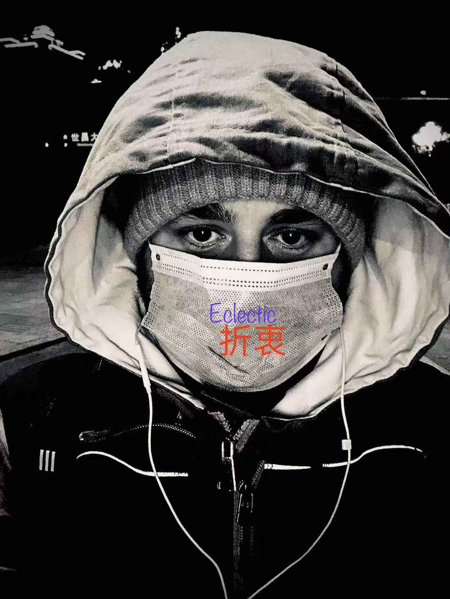

Campbell M Casteel
Enthusiastic Young Man From London, U.K.
Introduction
- Hi, my name is Campbell! I’m an aspiring web designer who from a young age has always been fascinated with computers and the web. I've lived in lots of different countries, but mainly in China, for a total of nearly 7 years now! I have worked in lots of different jobs, but mainly in languages, which I feel has given me a reasona ble aptitude for learning new languages(such as computer languages).
- I’ve been a Teacher and Interpreter/Translator for most of my professional career, however, I am looking to change things up. In the past, I wanted to get into Tech but my path went a different way, now I am ready to change that path and I'm definitely an avid learner always craving a new challenge.
- I’m excited to bring my life experience to this new field and look forward to applying myself whilst learning to code and design websites, apps and programs!
- If you'd like to learn more please check out my experience page or click here to view my CV in a new tab here.
Current Targets
- I plan to work with my Auntie in the future, she is a very experienced Web Designer and Programmer, I have always admired her love for her work and tenacious ability to learn every aspect about computers and the internet. I believe working with her will give me, unlimited options to grow as well as the opportunity to be part of many incredibly lucrative networks.
For this plan to come to fruition, I will work hard to master the following skills:-
- HTML
- Javascript
- PHP
- CSS
- Photoshop
- SEO